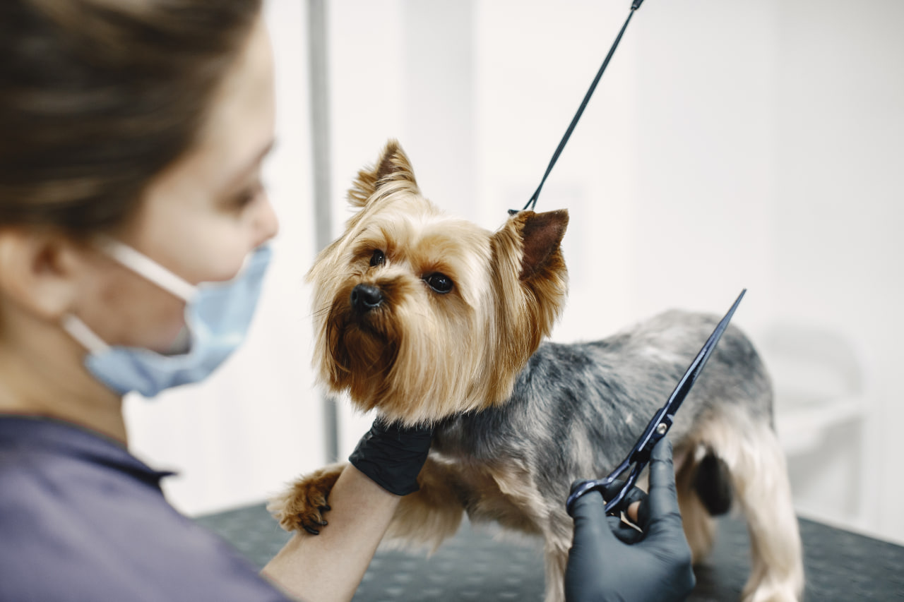
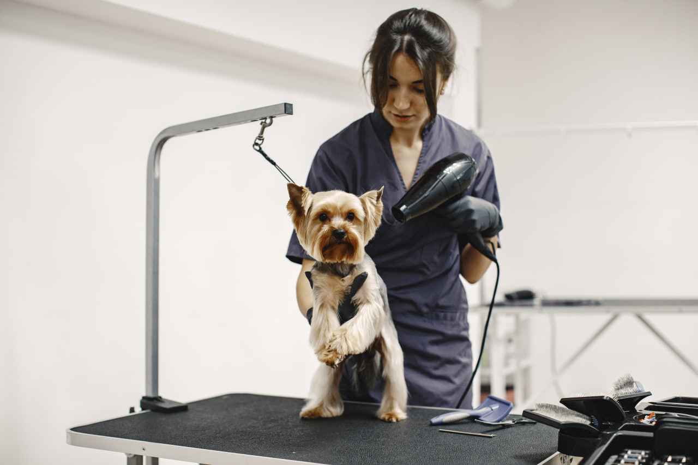

01 / CORE FOUNDATION
Dieses Basis-Intensivtraining richtet sich an Einsteiger, die eine klare und praxisnahe Einführung in das Grooming suchen. Das Programm umfasst die Vorbereitung des Arbeitsplatzes, grundlegende Hygieneschritte, den sorgfältigen Umgang mit Instrumenten sowie wichtige Grundlagen zur Anatomie und Fellstruktur des Hundes. Sie lernen den sicheren Umgang mit der Schere, ein besseres Verständnis für Proportionen des Tierkörpers und die Abläufe, die zu einer sauberen und ruhigen Arbeitsweise gehören. Der Kurs eignet sich gut für Assistenten, Anfänger und alle, die prüfen möchten, ob sie sich in diesem Berufsfeld weiterentwickeln möchten.

02 / MASTER STYLIST
Dieser Aufbaukurs ist für Teilnehmer mit ersten praktischen Erfahrungen konzipiert, die ihre Technik vertiefen und sicherer in der Arbeit mit unterschiedlichen Felltypen werden möchten. Im Fokus stehen präzise Schnittführung, strukturierte Arbeitsabläufe sowie das Training an häufig nachgefragten Rassen wie Yorkshire Terrier, Maltipoo oder Pudel. Darüber hinaus erhalten Sie eine Einführung in moderne Stilrichtungen wie Asian Fusion und beschäftigen sich mit dem passenden Einsatz von Pflege- und Kosmetikprodukten im Salonalltag. Das Programm beinhaltet intensive Praxiseinheiten an realen Modellen unter Begleitung erfahrener Mentoren.

03 / BUSINESS ELITE
Dieses vertiefende Programm verbindet fortgeschrittene Grooming-Themen mit organisatorischen und unternehmerischen Grundlagen. Neben zusätzlichen Praxisinhalten beschäftigen Sie sich mit wichtigen Fragen rund um die Planung eines eigenen Angebots oder die Weiterentwicklung bestehender Arbeitsabläufe. Dazu gehören unter anderem grundlegende Informationen zu organisatorischen Anforderungen in Deutschland, zur Auswahl geeigneter Ausstattung sowie zur Positionierung und Kommunikation eines Salons. Der Kurs richtet sich an Teilnehmer, die ihre fachliche Arbeit ausbauen und sich zugleich strukturierter mit den geschäftlichen Aspekten des Berufs befassen möchten.